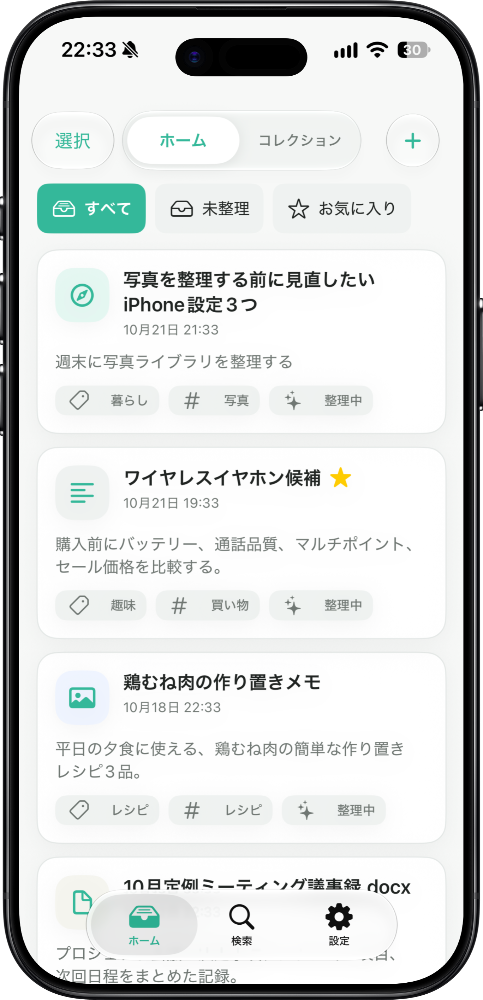

共有から保存
Safari、写真、ファイルなどからQuickKeepを選ぶだけ。保存時にフォルダやタグを決める必要はありません。
Product Information
QuickKeepは、Webページ、画像、PDF、テキスト、動画、ファイルを共有からすばやく保存し、必要なときに探しやすくするアプリです。

App Storeで配信中
QuickKeepはApp Storeで配信中です。iPhoneやiPadにダウンロードして、保存をはじめましょう。
Core Features
QuickKeepは、保存の手間を増やさず、あとで探すための手がかりを残すことを重視しています。
Safari、写真、ファイルなどからQuickKeepを選ぶだけ。保存時にフォルダやタグを決める必要はありません。
まずはローカル保存と検索を中心に。同期や外部サービスに頼りすぎない、落ち着いた保存体験を目指します。
タイトル、メモ、カテゴリ、タグを手がかりに、保存したものを探せます。必要に応じて整理情報も編集できます。
Workflow
保存時に考えることを減らし、あとで探すための手がかりを静かに残します。
残したいページやファイルから、iOSの共有シートを開きます。
QuickKeepを選ぶと、最低限の確認だけで保存できます。
検索、カテゴリ、タグ、コレクションを手がかりに必要なものへ戻れます。
For many formats
URL、画像、PDF、テキスト、動画、ファイル。あとで必要になりそうなものを、ひとつの場所に集められるように設計しています。
On-device AI
対応端末では、保存後に端末内AIが内容を見て、カテゴリやタグの候補を提案します。保存そのものは通信や処理を待たずに完了します。
Policy
便利さだけでなく、保存した内容をどう扱うかを明確にすることも、製品の品質だと考えています。
QuickKeep専用の会員登録やログインを前提にしない設計です。
保存した内容を集めて保管する、QuickKeep運営側のサーバーは運用していません。プライバシーに配慮した設計です。
保存時のカテゴリ・タグ入力を必須にせず、まず残せる体験を優先します。
Information
利用条件、プライバシー、サポート情報を以下にまとめています。